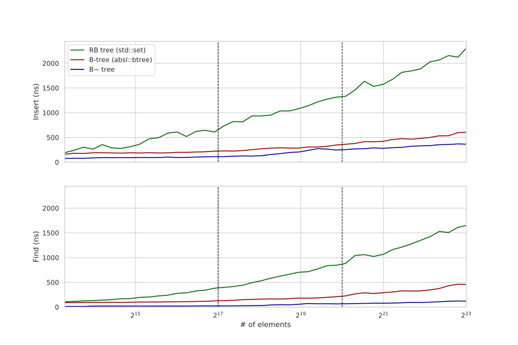
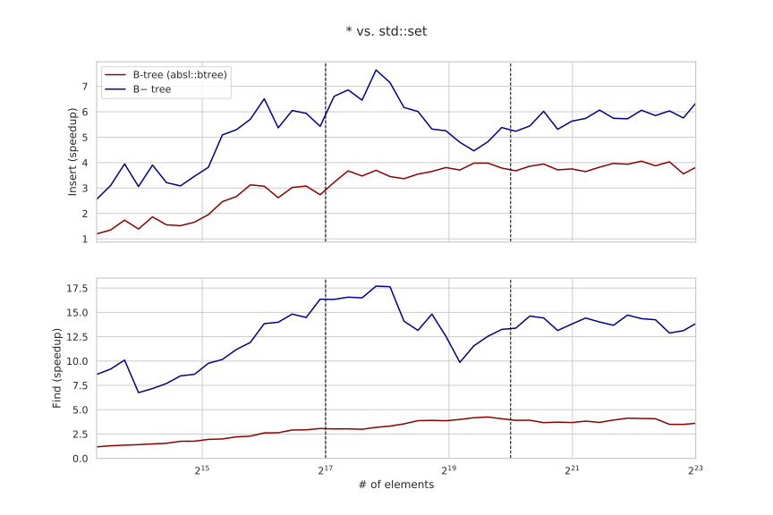
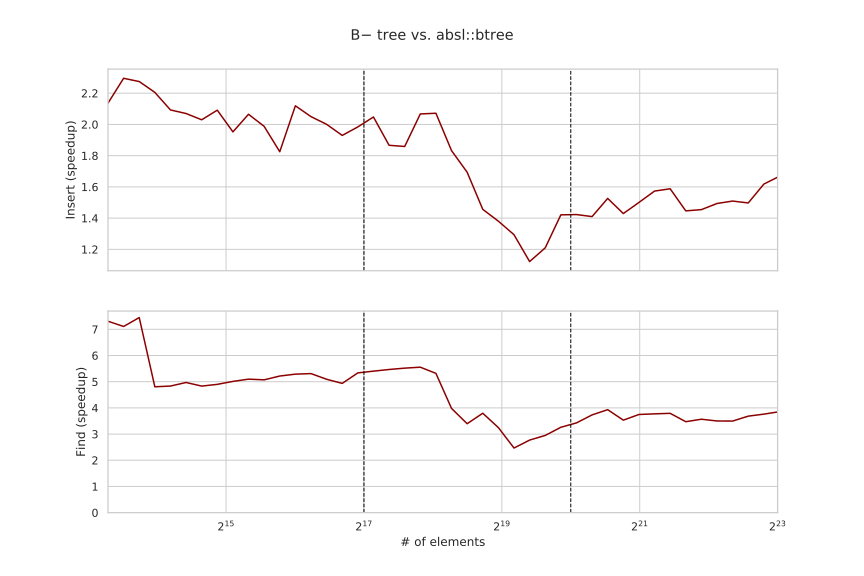

In the previous article, we designed and implemented static B-trees to speed up binary searching in sorted arrays. In its last section, we briefly discussed how to make them dynamic back while retaining the performance gains from SIMD and validated our predictions by adding and following explicit pointers in the internal nodes of the S+ tree.
In this article, we follow up on that proposition and design a minimally functional search tree for integer keys, achieving up to 18x/8x speedup over std::set and up to 7x/2x speedup over absl::btree for lower_bound and insert queries, respectively — with yet ample room for improvement.
The memory overhead of the structure is around 30% for 32-bit integers, and the final implementation is under 150 lines of C++. It can be easily generalized to other arithmetic types and small/fixed-length strings such as hashes, country codes, and stock symbols.
#B− Tree
Instead of making small incremental improvements like we usually do in other case studies, in this article, we will implement just one data structure that we name B− tree, which is based on the B+ tree, with a few minor differences:
- Nodes in the B− tree do not store pointers or any metadata except for the pointers to internal node children (while the B+ tree leaf nodes store a pointer to the next leaf node). This lets us perfectly place the keys in the leaf nodes on cache lines.
- We define key $i$ to be the maximum key in the subtree of the child $i$ instead of the minimum key in the subtree of the child $(i + 1)$. This lets us not fetch any other nodes after we reach a leaf (in the B+ tree, all keys in the leaf node may be less than the search key, so we need to go to the next leaf node to fetch its first element).
We also use a node size of $B=32$, which is smaller than typical. The reason why it is not $16$, which was optimal for the S+ tree, is because we have the additional overhead associated with fetching the pointer, and the benefit of reducing the tree height by ~20% outweighs the cost of processing twice the elements per node, and also because it improves the running time of the insert query that needs to perform a costly node split every $\frac{B}{2}$ insertions on average.
#Memory Layout
Although this is probably not the best approach in terms of software engineering, we will simply store the entire tree in a large pre-allocated array, without discriminating between leaves and internal nodes:
const int R = 1e8;
alignas(64) int tree[R];
We also pre-fill this array with infinities to simplify the implementation:
for (int i = 0; i < R; i++)
tree[i] = INT_MAX;
(In general, it is technically cheating to compare against std::set or other structures that use new under the hood, but memory allocation and initialization are not the bottlenecks here, so this does not significantly affect the evaluation.)
Both nodes types store their keys sequentially in sorted order and are identified by the index of its first key in the array:
- A leaf node has up to $(B - 1)$ keys but is padded to $B$ elements with infinities.
- An internal node has up to $(B - 2)$ keys padded to $B$ elements and up to $(B - 1)$ indices of its child nodes, also padded to $B$ elements.
These design decisions are not arbitrary:
- The padding ensures that leaf nodes occupy exactly 2 cache lines and internal nodes occupy exactly 4 cache lines.
- We specifically use indices instead of pointers to save cache space and make moving them with SIMD faster.
(We will use “pointer” and “index” interchangeably from now on.) - We store indices right after the keys even though they are stored in separate cache lines because we have reasons.
- We intentionally “waste” one array cell in leaf nodes and $2+1=3$ cells in internal nodes because we need it to store temporary results during a node split.
Initially, we only have one empty leaf node as the root:
const int B = 32;
int root = 0; // where the keys of the root start
int n_tree = B; // number of allocated array cells
int H = 1; // current tree height
To “allocate” a new node, we simply increase n_tree by $B$ if it is a leaf node or by $2 B$ if it is an internal node.
Since new nodes can only be created by splitting a full node, each node except for the root will be at least half full. This implies that we need between 4 and 8 bytes per integer element (the internal nodes will contribute $\frac{1}{16}$-th or so to that number), the former being the case when the inserts are sequential, and the latter being the case when the input is adversarial. When the queries are uniformly distributed, the nodes are ~75% full on average, projecting to ~5.2 bytes per element.
B-trees are very memory-efficient compared to the pointer-based binary trees. For example, std::set needs at least three pointers (the left child, the right child, and the parent), alone costing $3 \times 8 = 24$ bytes, plus at least another $8$ bytes to store the key and the meta-information due to structure padding.
#Searching
It is a very common scenario when >90% of operations are lookups, and even if this is not the case, every other tree operation typically begins with locating a key anyway, so we will start with implementing and optimizing the searches.
When we implemented S-trees, we ended up storing the keys in permuted order due to the intricacies of how the blending/packs instructions work. For the dynamic tree problem, storing the keys in permuted order would make inserts much harder to implement, so we will change the approach instead.
An alternative way to think about finding the would-be position of the element x in a sorted array is not “the index of the first element that is not less than x” but “the number of elements that are less than x.” This observation generates the following idea: compare the keys against x, aggregate the vector masks into a 32-bit mask (where each bit can correspond to any element as long as the mapping is bijective), and then call popcnt on it, returning the number of elements less than x.
This trick lets us perform the local search efficiently and without requiring any shuffling:
typedef __m256i reg;
reg cmp(reg x, int *node) {
reg y = _mm256_load_si256((reg*) node);
return _mm256_cmpgt_epi32(x, y);
}
// returns how many keys are less than x
unsigned rank32(reg x, int *node) {
reg m1 = cmp(x, node);
reg m2 = cmp(x, node + 8);
reg m3 = cmp(x, node + 16);
reg m4 = cmp(x, node + 24);
// take lower 16 bits from m1/m3 and higher 16 bits from m2/m4
m1 = _mm256_blend_epi16(m1, m2, 0b01010101);
m3 = _mm256_blend_epi16(m3, m4, 0b01010101);
m1 = _mm256_packs_epi16(m1, m3); // can also use blendv here, but packs is simpler
unsigned mask = _mm256_movemask_epi8(m1);
return __builtin_popcount(mask);
}
Note that, because of this procedure, we have to pad the “key area” with infinities, which prevents us from storing metadata in the vacated cells (unless we are also willing to spend a few cycles to mask it out when loading a SIMD lane).
Now, to implement lower_bound, we can descend the tree just like we did in the S+ tree, but fetching the pointer after we compute the child number:
int lower_bound(int _x) {
unsigned k = root;
reg x = _mm256_set1_epi32(_x);
for (int h = 0; h < H - 1; h++) {
unsigned i = rank32(x, &tree[k]);
k = tree[k + B + i];
}
unsigned i = rank32(x, &tree[k]);
return tree[k + i];
}
Implementing search is easy, and it doesn’t introduce much overhead. The hard part is implementing insertion.
#Insertion
On the one side, correctly implementing insertion takes a lot of code, but on the other, most of that code is executed very infrequently, so we don’t have to care about its performance that much. Most often, all we need to do is to reach the leaf node (which we’ve already figured out how to do) and then insert a new key into it, moving some suffix of the keys one position to the right. Occasionally, we also need to split the node and/or update some ancestors, but this is relatively rare, so let’s focus on the most common execution path first.
To insert a key into an array of $(B - 1)$ sorted elements, we can load them in vector registers and then mask-store them one position to the right using a precomputed mask that tells which elements need to be written for a given i:
struct Precalc {
alignas(64) int mask[B][B];
constexpr Precalc() : mask{} {
for (int i = 0; i < B; i++)
for (int j = i; j < B - 1; j++)
// everything from i to B - 2 inclusive needs to be moved
mask[i][j] = -1;
}
};
constexpr Precalc P;
void insert(int *node, int i, int x) {
// need to iterate right-to-left to not overwrite the first element of the next lane
for (int j = B - 8; j >= 0; j -= 8) {
// load the keys
reg t = _mm256_load_si256((reg*) &node[j]);
// load the corresponding mask
reg mask = _mm256_load_si256((reg*) &P.mask[i][j]);
// mask-write them one position to the right
_mm256_maskstore_epi32(&node[j + 1], mask, t);
}
node[i] = x; // finally, write the element itself
}
This constexpr magic is the only C++ feature we use.
There are other ways to do it, some possibly more efficient, but we are going to stop there for now.
When we split a node, we need to move half of the keys to another node, so let’s write another primitive that does it:
// move the second half of a node and fill it with infinities
void move(int *from, int *to) {
const reg infs = _mm256_set1_epi32(INT_MAX);
for (int i = 0; i < B / 2; i += 8) {
reg t = _mm256_load_si256((reg*) &from[B / 2 + i]);
_mm256_store_si256((reg*) &to[i], t);
_mm256_store_si256((reg*) &from[B / 2 + i], infs);
}
}
With these two vector functions implemented, we can now very carefully implement insertion:
void insert(int _x) {
// the beginning of the procedure is the same as in lower_bound,
// except that we save the path in case we need to update some of our ancestors
unsigned sk[10], si[10]; // k and i on each iteration
// ^------^ We assume that the tree height does not exceed 10
// (which would require at least 16^10 elements)
unsigned k = root;
reg x = _mm256_set1_epi32(_x);
for (int h = 0; h < H - 1; h++) {
unsigned i = rank32(x, &tree[k]);
// optionally update the key i right away
tree[k + i] = (_x > tree[k + i] ? _x : tree[k + i]);
sk[h] = k, si[h] = i; // and save the path
k = tree[k + B + i];
}
unsigned i = rank32(x, &tree[k]);
// we can start computing the is-full check before insertion completes
bool filled = (tree[k + B - 2] != INT_MAX);
insert(tree + k, i, _x);
if (filled) {
// the node needs to be split, so we create a new leaf node
move(tree + k, tree + n_tree);
int v = tree[k + B / 2 - 1]; // new key to be inserted
int p = n_tree; // pointer to the newly created node
n_tree += B;
for (int h = H - 2; h >= 0; h--) {
// ascend and repeat until we reach the root or find a the node is not split
k = sk[h], i = si[h];
filled = (tree[k + B - 3] != INT_MAX);
// the node already has a correct key (the right one)
// and a correct pointer (the left one)
insert(tree + k, i, v);
insert(tree + k + B, i + 1, p);
if (!filled)
return; // we're done
// create a new internal node
move(tree + k, tree + n_tree); // move keys
move(tree + k + B, tree + n_tree + B); // move pointers
v = tree[k + B / 2 - 1];
tree[k + B / 2 - 1] = INT_MAX;
p = n_tree;
n_tree += 2 * B;
}
// if reach here, this means we've reached the root,
// and it was split into two, so we need a new root
tree[n_tree] = v;
tree[n_tree + B] = root;
tree[n_tree + B + 1] = p;
root = n_tree;
n_tree += 2 * B;
H++;
}
}
There are many inefficiencies, but, luckily, the body of if (filled) is executed very infrequently — approximately every $\frac{B}{2}$ insertions — and the insertion performance is not really our top priority, so we will just leave it there.
#Evaluation
We have only implemented insert and lower_bound, so this is what we will measure.
We want the evaluation to take a reasonable time, so our benchmark is a loop that alternates between two steps:
- Increase the structure size from $1.17^k$ to $1.17^{k+1}$ using individual
inserts and measure the time it took. - Perform $10^6$ random
lower_boundqueries and measure the time it took.
We start at the size $10^4$ and end at $10^7$, for around $50$ data points in total. We generate the data for both query types uniformly in the $[0, 2^{30})$ range and independently between the stages. Since the data generation process allows for repeated keys, we compared against std::multiset and absl::btree_multiset1, although we still refer to them as std::set and absl::btree for brevity. We also enable hugepages on the system level for all three runs.
The performance of the B− tree matches what we originally predicted — at least for the lookups:

The relative speedup varies with the structure size — 7-18x/3-8x over STL and 3-7x/1.5-2x over Abseil:

Insertions are only 1.5-2 faster than for absl::btree, which uses scalar code to do everything. My best guess why insertions are that slow is due to data dependency: since the tree nodes may change, the CPU can’t start processing the next query before the previous one finishes (the true latency of both queries is roughly equal and ~3x of the reciprocal throughput of lower_bound).

When the structure size is small, the reciprocal throughput of lower_bound increases in discrete steps: it starts with 3.5ns when there is only the root to visit, then grows to 6.5ns (two nodes), and then to 12ns (three nodes), and then hits the L2 cache (not shown on the graphs) and starts increasing more smoothly, but still with noticeable spikes when the tree height increases.
Interestingly, B− tree outperforms absl::btree even when it only stores a single key: it takes around 5ns stalling on branch misprediction, while (the search in) the B− tree is entirely branchless.
#Possible Optimizations
In our previous endeavors in data structure optimization, it helped a lot to make as many variables as possible compile-time constants: the compiler can hardcode these constants into the machine code, simplify the arithmetic, unroll all the loops, and do many other nice things for us.
This would not be a problem at all if our tree were of constant height, but it is not. It is largely constant, though: the height rarely changes, and in fact, under the constraints of the benchmark, the maximum height was only 6.
What we can do is pre-compile the insert and lower_bound functions for several different compile-time constant heights and switch between them as the tree grows. The idiomatic C++ way is to use virtual functions, but I prefer to be explicit and use raw function pointers like this:
void (*insert_ptr)(int);
int (*lower_bound_ptr)(int);
void insert(int x) {
insert_ptr(x);
}
int lower_bound(int x) {
return lower_bound_ptr(x);
}
We now define template functions that have the tree height as a parameter, and in the grow-tree block inside the insert function, we change the pointers as the tree grows:
template <int H>
void insert_impl(int _x) {
// ...
}
template <int H>
void insert_impl(int _x) {
// ...
if (/* tree grows */) {
// ...
insert_ptr = &insert_impl<H + 1>;
lower_bound_ptr = &lower_bound_impl<H + 1>;
}
}
template <>
void insert_impl<10>(int x) {
std::cerr << "This depth was not supposed to be reached" << std::endl;
exit(1);
}
I tried but could not get any performance improvement with this, but I still have high hope for this approach because the compiler can (theoretically) remove sk and si, completely removing any temporary storage and only reading and computing everything once, greatly optimizing the insert procedure.
Insertion can also probably be optimized by using a larger block size as node splits would become rare, but this comes at the cost of slower lookups. We could also try different node sizes for different layers: leaves should probably be larger than the internal nodes.
Another idea is to move extra keys on insert to a sibling node, delaying the node split as long as possible.
One such particular modification is known as the B* tree. It moves the last key to the next node if the current one is full, and when both nodes become full, it jointly splits both of them, producing three nodes that are ⅔ full. This reduces the memory overhead (the nodes will be ⅚ full on average) and increases the fanout factor, reducing the height, which helps all operations.
This technique can even be extended to, say, three-to-four splits, although further generalization would come at the cost of a slower insert.
And yet another idea is to get rid of (some) pointers. For example, for large trees, we can probably afford a small S+ tree for $16 \cdot 17$ or so elements as the root, which we rebuild from scratch on each infrequent occasion when it changes. You can’t extend it to the whole tree, unfortunately: I believe there is a paper somewhere saying that we can’t turn a dynamic structure fully implicit without also having to do $\Omega(\sqrt n)$ operations per query.
We could also try some non-tree data structures, such as the skip list. There has even been a successful attempt to vectorize it — although the speedup was not that impressive. I have low hope that skip-list, in particular, can be improved, although it may achieve a higher total throughput in the concurrent setting.
#Other Operations
To delete a key, we can similarly locate and remove it from a node with the same mask-store trick. After that, if the node is at least half-full, we’re done. Otherwise, we try to borrow a key from the next sibling. If the sibling has more than $\frac{B}{2}$ keys, we append its first key and shift its keys one to the left. Otherwise, both the current node and the next node have less than $\frac{B}{2}$ keys, so we can merge them, after which we go to the parent and iteratively delete a key there.
Another thing we may want to implement is iteration. Bulk-loading each key from l to r is a very common pattern — for example, in SELECT abc ORDER BY xyz type of queries in databases — and B+ trees usually store pointers to the next node in the data layer to allow for this type of rapid iteration. In B− trees, as we’re using a much smaller node size, we can experience pointer chasing problems if we do this. Going to the parent and reading all its $B$ pointers is probably faster as it negates this problem. Therefore, a stack of ancestors (the sk and si arrays we used in insert) can serve as an iterator and may even be better than separately storing pointers in nodes.
We can easily implement almost everything that std::set does, but the B− tree, like any other B-tree, is very unlikely to become a drop-in replacement to std::set due to the requirement of pointer stability: a pointer to an element should remain valid unless the element is deleted, which is hard to achieve when we split and merge nodes all the time. This is a major problem not only for search trees but most data structures in general: having both pointer stability and high performance at the same time is next to impossible.
#Acknowledgements
Thanks to Danila Kutenin from Google for meaningful discussions of applicability and the usage of B-trees in Abseil.